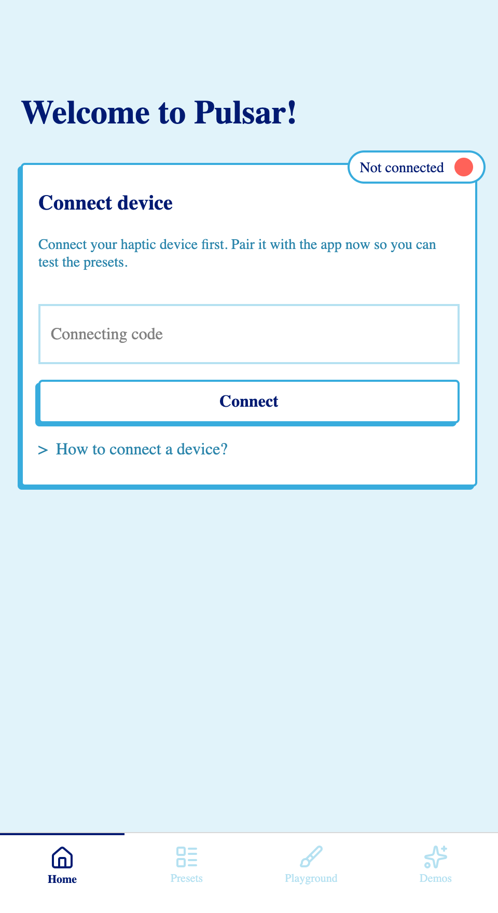
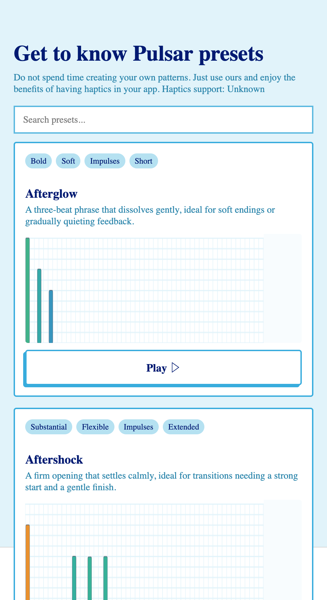
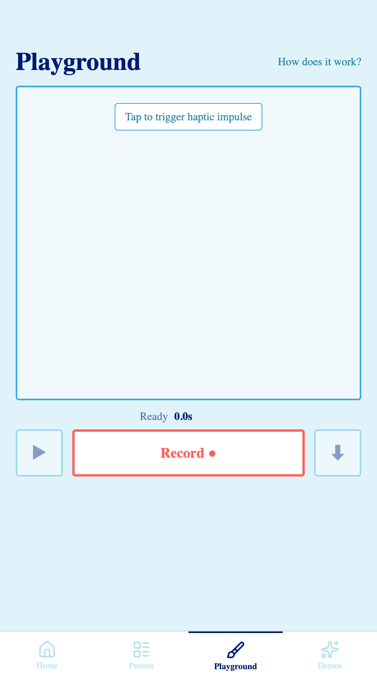
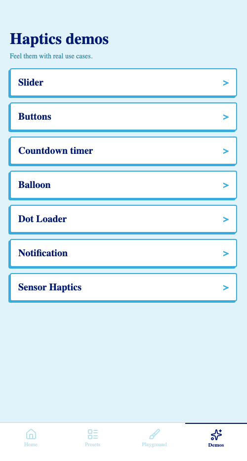
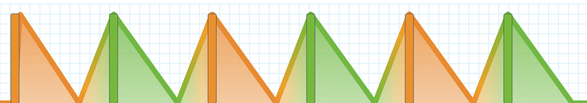
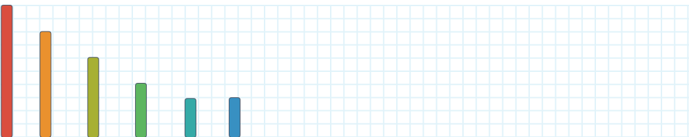

A Hackathon Story · 2026
A native, dual-thread port of Software Mansion's haptics SDK demo, ported from React Native to Lynx without writing the same app twice.
Hux · ByteDance Lynx · 2026




Context
A cross-platform, designer-grade haptics SDK by Software Mansion. Native Swift on iOS, native Kotlin on Android, shipping in production on App Store & Google Play.
151 hand-crafted presets, a PatternComposer for arbitrary discrete + continuous patterns, and a RealtimeComposer for gesture-driven feedback. All reachable through one React Native TurboModule today.
A Preset, Visualized
Each of Pulsar's 151 presets is a JSON pattern of discrete impulses (orange) and a continuous envelope of amplitude + frequency (green). Same shape on the wire, whether the renderer is CoreHaptics, VibrationEffect, or, now, Lynx.
Relentless and urgent. Best for critical errors or emergencies that require immediate attention.

A graceful drift toward silence. Ideal for dismissals or transitions that should feel calm and natural.

A Lynx app calls Presets.alarm(), and on the other side of the bridge,
the unchanged Swift / Kotlin SDK feeds the exact same envelope to the device's haptic actuator.
Architecture
The Swift and Kotlin Pulsar SDKs are mirrored into both adapters via source inclusion. The frame on top, RN vs Lynx, is what we rewrote.
deps/Pulsar/) · Android Pulsar.kt (Gradle sourceSets)
Zero native SDK modifications. Mirror strategy matches the RN package 1:1.
Layer ② · lynx-pulsar
Most of the React Native adapter's TS surface mapped 1:1 to Lynx. The TurboModule scaffolding and the worklet boilerplate just fell off.
deps/Pulsar/ and Gradle sourceSets.
useSharableState and useAdaptiveHaptics are no longer needed.
The Presets.ts file, the flat map of 151 named presets, is essentially the same file
in both ports. Same nested namespace shape, same string literals to the native side. That's
1,368 lines of pure config the slopfork carried across untouched.
The shape of the edit
usePatternComposer, the hook a Pulsar app uses
to parse and play a pattern, written once for React Native, once for Lynx. The structure is identical.
The differences are mechanical.
React Native react-native-pulsar/src/usePatternComposer.ts
import { useCallback, useEffect } from 'react'; import Pulsar from './NativeRNPulsar'; import type { Pattern } from './types'; import { useSharableState } from './useSharableState'; // RN prototype-cache workaround Pulsar.PatternComposer_play; export default function usePatternComposer( pattern?: Pattern, ) { const patternId = useSharableState(-1); const play = useCallback(() => { 'worklet'; const id = patternId.get(); if (id !== -1) { Pulsar.PatternComposer_play(id); } }, []); // ... stop, parse: same shape }
Lynx lynx-pulsar/src/usePatternComposer.ts
import { useCallback, useRef } from '@lynx-js/react'; import Pulsar from './NativePulsar'; import type { Pattern } from './types'; // no prototype workaround needed export default function usePatternComposer( pattern?: Pattern, ) { const patternIdRef = useRef<number>(-1); const play = useCallback(() => { const id = patternIdRef.current; if (id !== -1) { Pulsar.patternPlay(id); } }, []); // ... stop, parse: same shape }
Net result: import path, the worklet directive, and the
method-name prefix are gone. The shared-mutable-state primitive becomes a
plain useRef. Lynx's dual-thread model already
runs hooks on the background thread, so there's no shared-memory hop to bridge.
2Presets: drop the worklet and the method prefix
RN Presets.ts
import Pulsar from './NativeRNPulsar'; Pulsar.Pulsar_play; // RN prototype-cache workaround export const dogBark = () => { 'worklet'; Pulsar.Pulsar_play('DogBark'); };
Lynx Presets.ts
import Pulsar from './NativePulsar'; export const dogBark = () => { Pulsar.play('DogBark'); };
3JSX primitives change; events use bindtap
RN PulsarApp tab bar
<Pressable onPress={() => setTab('home')}> <Image source={iconHome} /> <Text>Home</Text> </Pressable>
Lynx App.tsx tab bar
<view className="tab" bindtap={handleTabHome}> <image src={iconHomeActive} style={{ width:"24px", height:"24px" }} /> <text className="tab-label">Home</text> </view>
ReactLynx · the not-so-mechanical parts
The adapter port is mechanical. The UI port is not. ReactLynx looks like React but ships its own primitives, its own CSS subset, and its own threading model. These are the differences you actually trip over.
<View> → <view>, <Text> → <text>,
onPress → bindtap, onTouchStart → bindtouchstart.
Text MUST be inside a <text>; bare strings in views are a build error.text-transform isn't supported. All lengths need units ("24px", not 24).
display: flex defaults to row. overflow: scroll is unsupported;
use <scroll-view scroll-y>. <image> needs explicit pixel dimensions.bindtouchstart/move/end. The Sensor Haptics demo's accelerometer-driven dot lost its accelerometer entirely
(no API yet), so fell back to touch drag with the original physics intact.NativeModules only exists on the background thread. The main thread evaluates
JSX snapshots. The adapter wraps with typeof NativeModules !== 'undefined' so the module file is
safe to import on both threads.